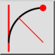
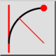
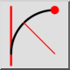
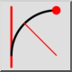

Tangenta, točka, polmer
Orodna vrstica / ikona:
 

Meni: Risanje > Lok > Tangenta, točka, polmer
Bližnjice: A, T
Ukazi: arctangentpointradius | at
Orodna vrstica / ikona:
 

Meni: Risanje > Lok > Tangenta, točka, polmer
Bližnjice: A, T
Ukazi: arctangentpointradius | at
Nariše lok z danim polmerom, ki se dotika entitete in poteka skozi točko.